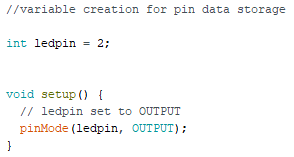
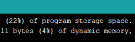
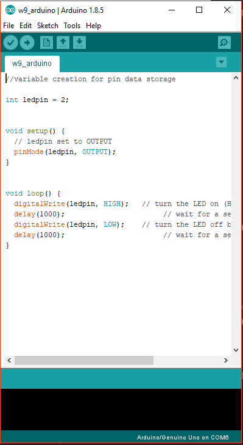
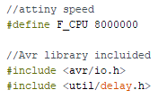
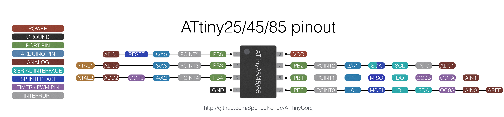
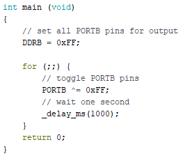
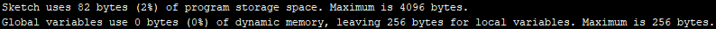
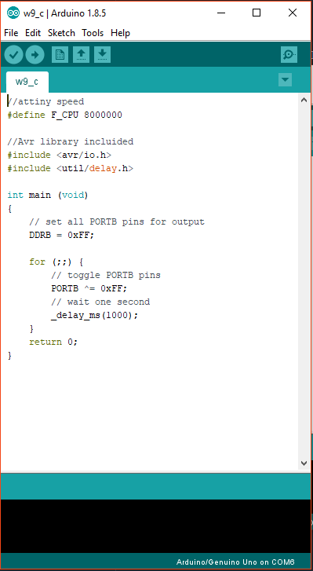

Embedded Programming
- Group: Test runout, alignment, speeds, feeds, and toolpaths for your machine
- Individual assignment: Read a microcontroller data sheet.
- Individual assignment: Program your board to do something, with as many different programming languages and programming environments as possible.
Micro Datasheet
In this assigment I will be using the Electronics Design week board I did. This is an attiny45 micro from AVR. I found the micro datasheet at this link.
Reading a micro might be a long and messy task. I used Sparkfun Electronics guide "How to read a Datasheet" (link here), which summaries the most important stuff when not having experience with electronics.

According to the guide, I will be looking for: summary, specifications, pinout, absolute ratings, recommended operation conditions and example schematics.
Attiny 45 it's a 8 pin microcontroller. Taking out VCC and GROUND pins, the micro have 6 I/O pins from which RESET is usually left alone. Works with 2.7 to 5.5 Volts.
It does not have hardware serial comm, which might be solved with a software based one. Could be hard coded directly or "SoftwareSerial" library could be used.
The micro have 4K storage, meaning it have really short space. The lighter the code, the better.
Arduino
I will be coding to the Week7 board with Arduino languaje and C to blink the LED on Pin 2. To program the micro, an arduino as ISP will be used.
Using the Arduino IDE, we load the blink example. From "File" menu >> Examples >> Basics >> Blink. This code needs to be prepared to match the board pinout.
Week 7 board have it's LED on Pin2, so I need to change the code from LED_BUILTIN to pin 2. I created a variable to storage the pin number and labeled "ledpin". The last part of the code is the standard blink part which turns light on/off with digitalWrite() function.

Now I load it to the board and see the code takes 942 bytes of memory from the 4096 bytes available (22%).


C Language
Arduino language is just a variation of C++. Programming with C directly is similar but looks weird for someone who does not know about registers.
Using Arduino IDE, the first part of the code is to set CPU speed. Attiny45 runs usually at 8MHz, so speed is defined as a whole number. Also it is important to include avr library since we are working with an attiny which is an avr based microcontroller.

The main function (void function which loops infinitely) contains the code to set all PORTB pins. PORTB stands as a "group" name for those pins. Attiny45 "PB" pins are physical pin 1 (PB5), 2 (PB3), 3 (PB4), 5 (PB0), 6 (PB1) and 7 (PB2). Physical pins 4 and 8 are for GROUND and VCC.

A "For" function with no condition runs the snippet with toggle function for light on/off the LED while delaying 1 second between actions.

Finally when loading the code, an amazing low memory usage shows why using c is efficient.

